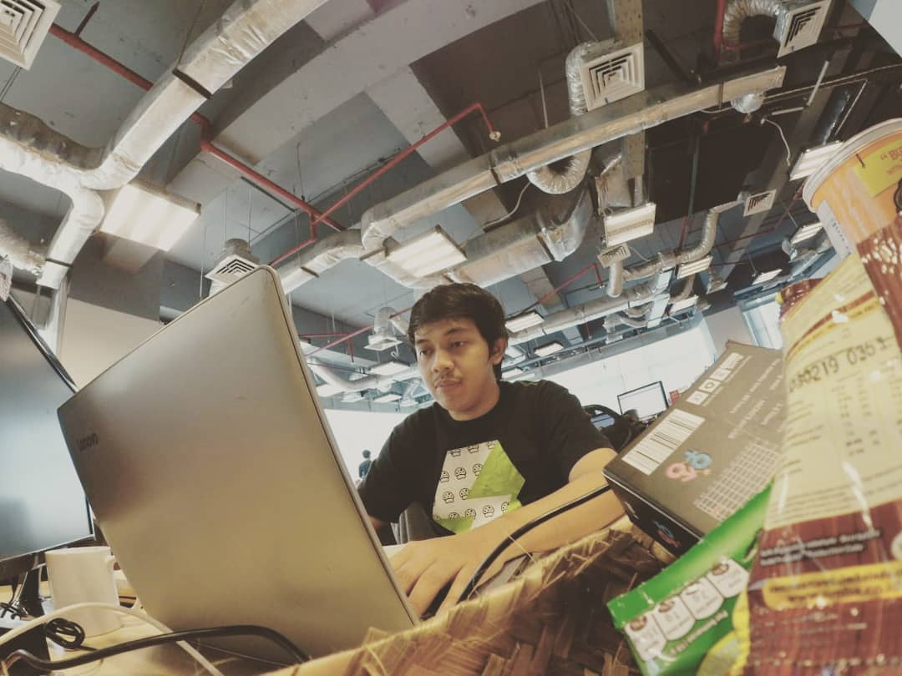

© 2022 Tofan Aditya
Created by Opanlabs
Tofan Aditya
Tech enthusiast, Front-end Developer / WordPress Engineer, From Logic to Launch

Tofan Aditya
Experienced Wordpress & Front-end Developer adept in all stages of advanced web development. Knowledgeable in user interface, testing, and debugging processes. Bringing forth expertise in UI/UX, installation, testing and maintenance of web systems. Able to effectively self-manage during independent projects, as well as collaborate in a team setting.